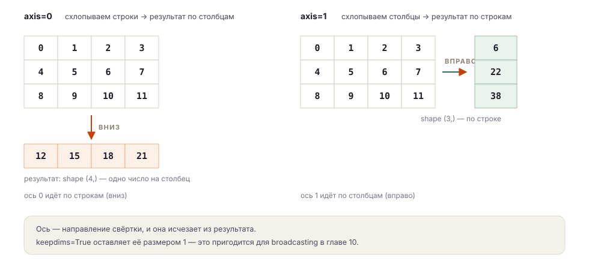

axis: вдоль какой стены считать Ось — это направление свёртки, а не то, что останется
axis путают все: кажется, что он указывает, «что оставить». На самом деле он
указывает, вдоль чего идти, складывая значения. Ось, по которой прошли, исчезает из результата.
01Зачем это backend-разработчику
- Отчёты. «Сумма по каждому дню», «средний чек по категориям», «максимум по месяцам» — это агрегаты по оси.
- pandas. Там axis встречается в
sum,mean,dropna,apply— и ошибиться в нём ещё легче. - Подготовка к groupby. Понимание «по какой оси» напрямую переносится в
GROUP BYи вgroupby. - Собеседование: «что делает axis=0», «почему форма результата такая» — проверяют, понимаете ли вы размерности.
02Ассоциация-якорь: идёшь вдоль стены
Вы идёте вдоль стены и складываете кирпичи. Кирпичи на стене складываются в один результат, и сама стена после этого исчезает.
axis=0 — идём вниз по строкам. Складываем всё, что стоит в столбце, — остаются столбцы (4 числа). axis=1 — идём вправо по столбцам. Складываем всё, что стоит в строке, — остаются строки (3 числа).
03Ассоциативный ряд: восемь звеньев
- shape (3, 4)3 строки, 4 столбца
- axis=0идём вниз по строкам
- результат (4,)строка исчезла, столбцы остались
- axis=1идём вправо по столбцам
- результат (3,)столбцы исчезли, строки остались
- axis=Noneсвернуть всё в одно число
- keepdimsоставить ось размером 1
- axis=-1последняя ось, без подсчёта
04Схема: две оси, два результата

keepdims=True оставляет её размером 1.
05Как это устроено на самом деле
Агрегат «схлопывает» ось: размер по ней превращается в единицу, а потом и вовсе исчезает из формы.
Поэтому m.sum(axis=0) из (3, 4) даёт (4,),
а m.sum(axis=None) — скаляр. Тот же принцип у mean,
max, std, argmax.
| Вызов | Форма результата | Смысл |
|---|---|---|
| m.sum() | скаляр | сумма всех элементов |
| m.sum(axis=0) | (4,) | по столбцам: свернули строки |
| m.sum(axis=1) | (3,) | по строкам: свернули столбцы |
| m.sum(axis=0, keepdims=True) | (1, 4) | та же ось, но размер 1 |
| cube.sum(axis=(0, 2)) | (3,) | свернули две оси сразу |
Зачем keepdims
Без keepdims результат теряет ось, и его нельзя вычесть из исходной матрицы:
(3, 4) - (4,) сработает благодаря broadcasting, но смысл может оказаться не тем.
С keepdims форма (1, 4) однозначно говорит: «это средние
по столбцам, по одному на столбец».
axis=-1
Отрицательные оси считаются с конца: -1 — последняя, -2 —
предпоследняя. Это удобно в функциях, которые не знают размерности заранее.
06Лаборатория: запустить и увидеть
Фрагменты файла snippets/09_axis_lab.py.
Шаг 1. Две суммы одной матрицы
import numpy as np m = np.arange(12).reshape(3, 4) print(m.sum(axis=0), m.sum(axis=0).shape) print(m.sum(axis=1), m.sum(axis=1).shape) print(m.sum(), m.sum().shape)
Шаг 2. Средние, максимум и argmax
print(m.mean(axis=0)) print(m.mean(axis=1)) print(m.max(axis=1)) print(m.argmax(axis=0), m.argmax(axis=1))
argmax(axis=0) ищет максимум в каждом столбце и возвращает индекс строки,
где он стоит. Во всех столбцах максимум в последней строке, поэтому результат [2 2 2 2].
Шаг 3. keepdims и отрицательные оси
print(m.sum(axis=0).shape) print(m.sum(axis=0, keepdims=True).shape) print(m.sum(axis=0, keepdims=True)) print(m.sum(axis=-1)) print(np.array_equal(m.sum(axis=-1), m.sum(axis=1)))
Шаг 4. Трёхмерный массив
cube = np.arange(24).reshape(2, 3, 4) print(cube.sum(axis=0).shape) # (3, 4) print(cube.sum(axis=(0, 2)).shape) # (3,) print(cube.sum(axis=(0, 2)))
Шаг 5. Ошибка оси и pandas
m.sum(axis=2)
# AxisError: axis 2 is out of bounds for array of dimension 2
import pandas as pd
df = pd.DataFrame(m, columns=["q1", "q2", "q3", "q4"],
index=["anna", "ivan", "olga"])
print(df.sum(axis=0).tolist()) # [12, 15, 18, 21]
print(df.sum(axis=1).tolist()) # [6, 22, 38]
07Мост: axis в pandas и SQL
pandas: axis=0 — по строкам таблицы
df.sum(axis=0) # сумма по каждому столбцу (свернули строки) df.sum(axis=1) # сумма по каждой строке (свернули столбцы) df.dropna(axis=0) # удалить строки с пропусками df.dropna(axis=1) # удалить столбцы с пропусками
В pandas axis=0 — это индекс (строки), axis=1 — колонки.
Логика та же, что в NumPy, но формулировка «удалить по оси 0» звучит ещё более запутанно. Спасает
правило: axis — то, что исчезает.
SQL: GROUP BY — это «свернуть по колонке»
SELECT city, SUM(amount) AS total FROM orders GROUP BY city; -- свернули строки по city, остался один ряд на город
GROUP BY — это агрегат по оси значений, а не по позиции: вы говорите,
по какому столбцу группировать. В NumPy роль такой «колонки» играет ось.
08Пять ошибок, на которых спотыкаются
Кажется, что «axis=0 — это по строкам», и результат ожидается длиной 3. На деле 0 — направление вниз, результат по столбцам.
m.mean(axis=1) возвращает (3,), а не (3, 4). Дальше вычитание из матрицы может дать не тот смысл.
keepdims=True, когда результат будет участвовать в операциях с исходной формой.Для двумерного массива axis=2 → AxisError.
ndim; использовать отрицательные оси, если размерность неизвестна.В pandas axis=0 означает «действие по индексу», а результат — по колонкам. Формулировки сбивают.
mean с NaN вернёт NaN, а не среднее по остальным.
np.nanmean / df.mean(skipna=True) — но осознанно: пропуск может быть значимым.09Вопросы с собеседования
Что означает axis=0?
Агрегат идёт вдоль строк (вниз), поэтому строки схлопываются, а результат содержит по одному значению на столбец. Для матрицы (3, 4) результат — (4,).
Почему sum(axis=1) даёт (3,)?
Потому что свёртка идёт вдоль столбцов: каждая строка превращается в одно число. Строк было 3 — остаётся вектор длины 3.
Зачем keepdims?
Оставляет свёрнутую ось размером 1, чтобы форма результата была совместима с исходной. Это делает broadcasting предсказуемым: (3,4) - (1,4) вместо (3,4) - (4,).
Что делает axis=None?
Сворачивает все оси: результат — скаляр. Это то же, что arr.sum() без аргументов.
Что такое отрицательная ось?
Отсчёт с конца: -1 — последняя ось, -2 — предпоследняя. Удобно в универсальном коде, где размерность неизвестна.
В чём разница axis в NumPy и pandas?
Смысл тот же — направление свёртки. В pandas axis=0 — индекс (строки), axis=1 — колонки, и это часто формулируют как «удалить строки/столбцы».
Как посчитать сумму по двум осям сразу?
Передать кортеж: cube.sum(axis=(0, 2)). Обе оси исчезнут, останется третья.
Почему argmax(axis=0) возвращает индексы строк?
Потому что ищется максимум в каждом столбце, и позиция внутри столбца — это номер строки. Форма результата — число столбцов.
10Три задачи: сначала своя попытка
01 Суммы по столбцам
Для матрицы 4×3 посчитайте сумму и среднее по каждому столбцу, не используя циклы.
Показать решение
m = np.arange(12).reshape(4, 3) print(m.sum(axis=0), m.mean(axis=0))
Что важно. axis=0 сворачивает строки: результат длины 3 — по числу столбцов.
02 Доля от общего
Посчитайте, какую долю каждая строка составляет от общей суммы матрицы.
Показать решение
row_sums = m.sum(axis=1) shares = row_sums / m.sum() print(shares.round(3))
Что важно. Сначала агрегат по оси, потом деление на скаляр — векторная операция без цикла.
03 Центрирование с keepdims
Вычтите из каждой строки её среднее так, чтобы форма не «сломалась».
Показать решение
row_means = m.mean(axis=1, keepdims=True) # (4, 1) centered = m - row_means print(centered.round(3))
Что важно. Без keepdims форма была бы (4,) и вычиталась бы по-другому
(по столбцам). Глава 10 объяснит, почему.